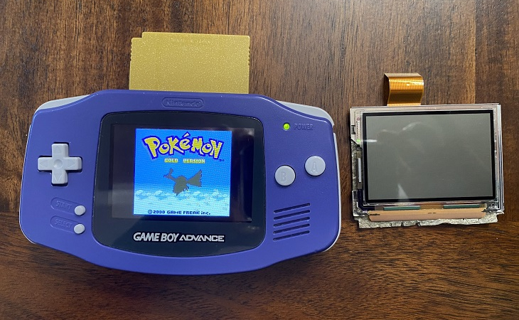
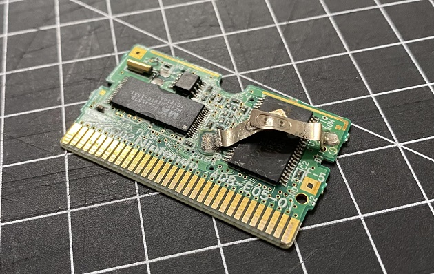
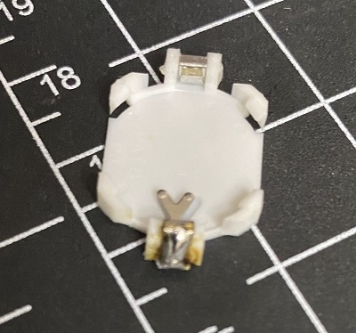
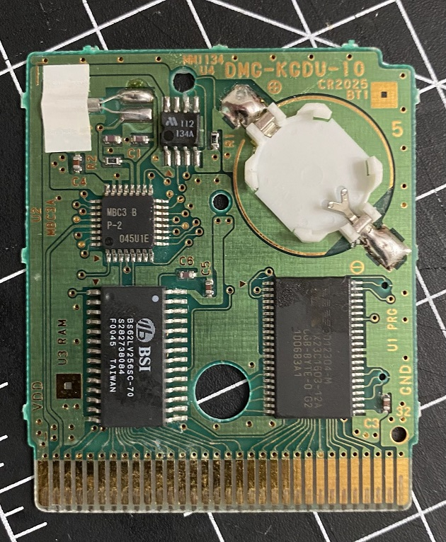
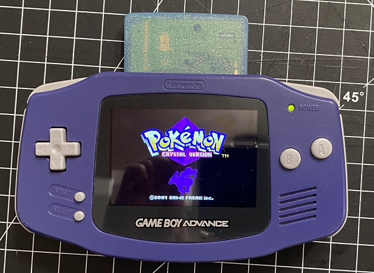

Today's patients
Before we get into the soldering process, let me wax poetic about my Game Boy and DS era. I am very sentimental for these Pocket Monsters.
In 2021 I got back into the older generations of Pokémon. Specifically, gen 2, 3, and 4. Interacting with the Galar gym leaders in the SwSh DLC made me miss the weekly events in HG/SS. When I played it for the first time as a kid, I always looked forward to seeing the gym leaders out and about, taking photos with them, and calling them on the PokéGear. The Isle of Armor DLC was fun… but returning to Johto was even more fun!
As much as I loved replaying Soul Silver - RNG manip’ing for perfect IVs and Shinies, fighting in the Battle Frontier - it had me yearning for the original experience. For starters, it is absurd how fast Gen 2 is compared to the remakes! I also really missed the original sound effects.
The purple GBA I've had for over a decade. I replaced the screen with the FunnyPlaying IPS v2 Backlight Mod.
So there I was, digging up my ancient copy of Gold, when I remembered that the game is literally unplayable without a new battery. I knew a janky way to fix it - ripping out the battery and electro-taping a new one in - but the casing of Gen 2 Pokemon games are so beautiful, and it felt blasphemous to do that. I had done it before with my copy of Emerald, and I regret it.
It was really difficult and really scary to take Emerald's battery out. That tape did not want to budge, and I was paranoid I would damage the cart. A GBA cartridge was never meant to have tape inside of it. It was crusty as hell in there, and I noticed that the front plate got cracked because of the extra height of the tape. I had to use an exacto knife to extract the old battery, and I'm so lucky I didn't damage anything important.
Gold was my first time handling a soldering iron, and it was terrifying. It was worth it, to not have to go through the gauntlet of electro-tape all over again. But my process was not very futureproof - in a few years I will need to solder a new battery into Gold again. That's because I used a tabbed battery, which are generic brand and notoriously weak compared to duracell batteries.
Luckily, the website I bought my new screen from ALSO sells battery retainers! Now I only have to solder the retainer in once, and every time I need a new battery, I just pop the old one out. But for Emerald, it was not so simple...
Saddest soldering attempt I ever did see. The retainer is not GBA compatible, despite what is says on the website. I wasted a lot of time trying to make it work, but I had to give up. This is the mangled retainer I ended up tossing. A working battery isn’t essential for Gen 3 games, unless you are really keen on growing berries. A silver lining is that a dead battery means I can RNG manip Gen 3. Prayer circle for me to get a Shiny mudkip with this tutorial. I’m considering this experience a win because a) I didn’t burn my fingers and b) I cleaned up the gunk while I was in there.
In stark contrast to that failure, here's my soldering job for Crystal! Now THIS is a solder project I can write home about. This game was my sister’s birthday gift to me last year. The old battery was already disconnected from the tabs because she treated the cartridge like a stim toy and shook it like a maraca when she This was a breeze compared to Emerald, because Game Boy Color carts are waaaay bigger and more accomodating for my fingers.
The sparkly blue casing looks beautiful with my purple gameboy! All-in-all I’m satisfied with today’s project.
